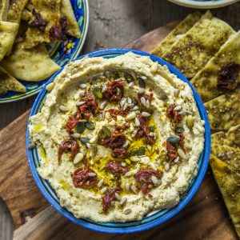

La recette du houmous

Hello les gourmands!!!! Aujourdhui je vous retrouve avec une recette qui fait partie de mon quotidien, il s’agit de la recette du houmous!
Le houmous, (phonétiquement parlant « hoummos » serait je pense plus juste ») est un plat typique du Proche-Orient composé de pois chiches, de purée de sésame (ce que j’appelle le tahine), de jus de citron et d’ail. Il existe une multitude de variantes utilisant la même base mais certains y ajoutent des épices, des herbes fraiches etc selon le pays, la recette de famille, les habitudes… Vous pouvez en trouver en Grèce ou dans les meezze libanais tout comme le baba ganoush que je vous avais présenté ici!
Aujourd’hui je suis ravie d’enfin partager avec vous cette recette car c’est LA recette qui rythme nos semaines depuis que l’on se connait avec mon chéri! En effet le houmous est un plat très sain, riche en protéines végétales, en fibres et en vitamines dû notamment à la présence de pois chiches (qui est tout de même l’ingrédient principal)! Je vais pas vous faire un topo sur les apports des pois chiches (peut-être devrais-je y consacrer un article?) mais sachez que cette légumineuse vous veut du bien! Les pois chiches et donc la consommation de houmous contribue « principalement » (car si je vous faisais une liste de ses vertues on en finirait pas^^) à faire baisser le mauvais cholestérol et donc contribue à lutter contre les maladies cardiovasculaires, il aide aussi à lutter contre l’anémie et contient très peu de calories! Bref autant vous dire que dans un petit bol comme celui-ci il y a une montagne de bienfaits pour l’organisme et moi j’en redemande (surtout quand c’est aussi bon!!)! J’accompagne mon houmous souvent de dips de légumes (carottes, concombre, radis par exemple), d’un peu de pain pitas ou comme ici de galettes au zaatar (Miam!!). Vous pouvez aussi en mettre sur des blinis, des galettes de riz ou tout simplement sur une tranche de pain.
Pour la petite anecdote (qui m’a vraiment fait beaucoup rire) j’ai vu qu’il y avait une véritable « guerre du houmous » qui sévissait car pas moins de huit pays revendiquent son origine !!! Évidemment je pense qu’il faut prendre cela avec beaucoup d’humour et pour finir je dirais même faites du houmous, pas la guerre (je dois surement être la seule à rire de ce jeu de mots mais j’assume pleinement^^)!
En attendant je vous laisse avec la recette de ce houmous si convoitée et je vous dis à très vite!
Ingrédients
- Citron - 1 + 1/2
- Tahine - 100g
- Ail - 2 gousses
- Huile d'olive
- Pois chiches en conserve - 400g poids net égoutté
- Pois chiches secs - 200g
- Graines de tournesol - 1 poignée
- Sésame doré - 1 poignée
- Tomates séchées - 1 poignée
- Pâte à pizza - 1
- Zaatar - 1 bonne poignée
- Huile d'olive - 1 filet
Instructions
- Laver les pois chiches et laisser tremper dans deux fois leur volume en eau pendant toute une nuit
- Égoutter les pois chiches
- Dans une poêle, verser les pois chiches avec le bicarbonate de soude
- Laisser cuire 3/5 minutes sans cesser de remuer
- Ajouter 1.5 L d'eau et porter à ébullition
- Laisser cuire jusqu’à obtenir des pois chiches très tendre (compter 30min de cuisson)
- Égoutter et réserver.
- Égoutter les pois chiches et réserver.
- Mettre les pois chiches dans un mixeur ou écrasez-les avec un écrase purée
- Ajouter le tahine suivi du jus de citron, de l'ail écrasé et du bicarbonate de soude (le bicarbonate sert ici à faciliter la digestion) Attention : Pour la quantité de citron j'ai mis qu'il fallait le jus d'1.5 citron. Cela va évidemment dépendre de la taille de votre citron et du jus qu'il contient. Selon vos goûts vous pouvez donc en ajouter ou en enlevez.
- Mixer, mixer, mixer pendant 5 bonnes minutes pour avoir une consistance crémeuse. Plus vous mixez plus la consistance est crémeuse Moi j'aime bien avoir un houmous épais légèrement granuleux alors je mixe un peu moins (mais là encore c'est une question de goûts!)
- Si la consistance de votre houmous ne vous satisfait pas (il n'y a pas de raison mais je préfère anticiper vos questions...) vous pouvez ajouter très très progressivement de l'eau (ou un peu d'huile d’olive) pour lui donner une consistance bien crémeuse. Normalement si vous avez bien mixé la consistance obtenue devrait être parfaite.
- Verser le houmous dans le contenant de votre choix et réserver au frais jusqu'au moment de servir
- Traditionnellement, au moment de servir le houmous est arrosé d'un filet d'huile d'olive. Comme vous pouvez le constater ici j'ai ajouté des tomates séchées, des graines de tournesol, du sésame doré etc..
- Préchauffer le four à 180°
- Pour ces galettes j'ai utilisé de la pâte à pizza que j'avais congelé (recette ici ou ici)
- Étaler la pâte à pizza et exercer une légère pression avec vos doigts sur l'ensemble de la pâte (afin d'éviter qu'elle monte de trop à la cuisson)
- Verser un filet d'huile d'olive sur l'ensemble de la pâte
- Saupoudrer de zaatar
- Enfourner 15-20 minutes (surveiller la cuisson) à 180°
- Dégustez sans plus attendre !!
Les tips de la communauté
Grand succès avec nombreux commentaires élogieux et conseils enrichissants. Les visiteurs partagent des astuces pour améliorer la recette. Quelques signalements de problèmes de consistance lors de la préparation.
Astuces
- Bien cuire les pois chiches jusqu'à ce qu'ils soient très tendres pour la bonne texture
- Laisser refroidir les pois chiches avant le mixage
- Utiliser un robot puissant (Vitamix ou petit robot) plutôt qu'un mixeur plongeur
- Remplacer le bicarbonate par l'algue Kombu pour meilleure digestibilité
- Ajouter 2 cuillères à soupe de pignons de pin et 1/2 cuillère à café de cumin en poudre
- Essayer 10 cm de crème de coco pour une version riche
Variantes suggérées
- Ajouter du cumin en poudre et des pignons de pin grillés
- Incorporer une touche de crème de coco
- Utiliser l'eau de cuisson ou de conserve pour la fluidité plutôt que de l'eau
Ajustements signalés
- Bien cuire les pois chiches (1h30 minimum) car insuffisamment cuits cause compacité
- La puissance du robot/mixer est essentielle pour la texture lisse
- Clarifier l'ajout de l'échalote et du harissa